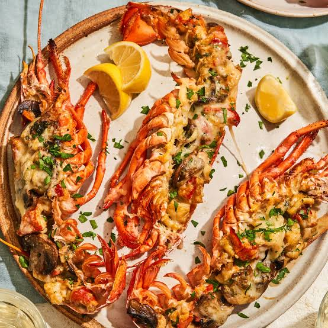

Lobster Thermidor Recipe

Mouth Watering Lobster Thermidor Made Easy
Enjoy this delicious Lobster Thermidor made with the simplest ingredients.
You can prep this easily ahead of time and make it so fast, you forgot you even started making them in the first place
Ingredients
- 4 four ounce lobster tails
- 3 tablespoons of butter
- 2 tablespoons of minced shallots
- Salt, to taste
- 1 1/2 cups of diced mushrooms [Optional]
- 1 tablespoons of all-purpose flour
- 2 tablespoons of cognac or brandy
- 1/2 cup of whole milk
- 2 tablespoons of creme fraiche or heavy cream
- 1 tablespoon of chopped fresh tarragon
- Cayenne pepper, to taste
- 2 teaspoons of fine dried bread crumbs
- 2 teaspoons of freshly grated Parmigiano-Reggiano cheese
- 2 teaspoons of melted butter
Steps
- Cut the bottom shell of the lobster tails using kitchen shears along each side where it meets the top shell; do not remove the shell at this point.
- Melt 2 tablespoons of butter in a skillet over medium-high heat. Place lobster tails cut side down in the butter. Cook, covered, about 3 minutes. Turn lobster tails
over [they are curved so will lean to 1 side]; cover and cook for 1 minute. Lean them to the other side; cover and cook 1 minute more.
- Remove from heat. Transfer lobster tails to a bowl. Remove any shell pieces from the skillet
- Place 1 tablespoon of butter in the skillet over medium heat; add shallots and a pinch of salt. Cook and stir until pan starts to deglaze and shallots soften, 3 to 4 minutes.
Add mushrooms; cook stir until golden brown, 5 to 6 minutes. Add flour; stir until mushrooms are coated and cook for 2 minutes. Pour in cognac; use a kitchen torch to flame
cognac to burn off alcohol. This will take just a few seconds. Add milk; cook and stir until pan is completely deglazed and milk begins to thicken and turn bubbly, about 2
minutes. Remove from heat. Stir in creme fraiche. Let cool.
- Remove lobster meat from the shell, leaving top shell intact. Remove any bits of the bottom shell from the meat.
- Preheat oven to 450 degress F [230 degrees C]. Line a baking pan with crinkled up foil. Make 4 channel-like indentations in the foil to hold and stabalize the lobster tails as
they bake.
- Slice lobster meat down the middle and check for and remove any dark veins. Chop into 1/2-inch pieces. Transfer meat to a mixing bowl. Add cooled sauce, terragon, a pinch of salt,
and cayenne pepper. Stir gently until well blended.
- Divide mixture among the lobster tail shells; place in prepared foil-lined pan. Sprinkle each lobster tail with about 1/2 teaspoon bread crumbs and 1/2 teaspoon grated cheese.
Drizzle melted butter on the stuffed shells.
- Bake in preheated oven until nicely browned and heated through, about 10 minutes. If you like, you can turn on the broiler and broil 1 minute until tops are golden and crispy.